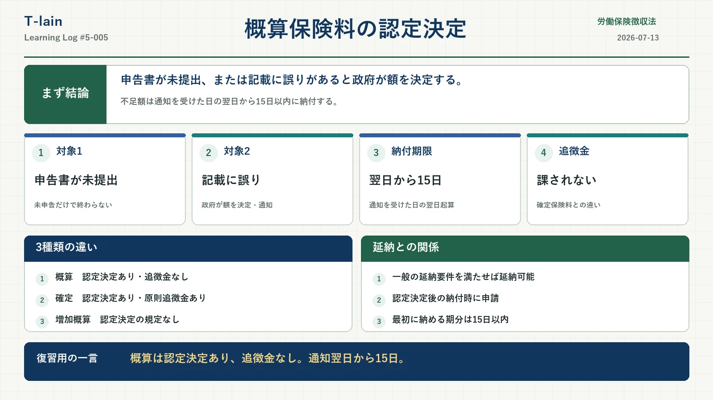

今日のテーマ
労働保険徴収法における、概算保険料の認定決定。
申告書を出さなかった場合だけでなく、提出した申告書に誤りがある場合も対象になる。認定決定後の納期限、追徴金、延納との関係を整理した。
まず結論
概算保険料申告書が未提出、または記載に誤りがあるときは、政府が概算保険料額を決定して事業主へ通知する。
- 認定決定を行うのは政府
- 未申告だけでなく、申告書の記載誤りも対象
- 不足額は、通知を受けた日の翌日から数えて15日以内に納付
- 概算保険料の認定決定には、徴収法21条の追徴金は課されない
- 一般の延納要件を満たせば、認定決定後も延納できる
概算保険料の認定決定とは
労働保険料は、原則として事業主が自ら計算し、申告・納付する申告納付方式を採っている。
しかし、事業主が徴収法15条1項または2項の概算保険料申告書を提出しないとき、または提出した申告書の記載に誤りがあると認められるときは、政府が概算保険料額を決定し、事業主へ通知する。これが概算保険料の認定決定。
認定決定が行われる2つの場合
| 場合 | 扱い |
|---|---|
| 申告書を提出しない | 政府が概算保険料額を決定して通知する |
| 申告書の記載に誤りがある | 提出済みでも、政府による認定決定の対象になる |
認定決定から納付まで
- 申告書の未提出、または記載誤りが確認される
- 政府が正しい概算保険料額を決定する
- 政府が決定額を事業主へ通知する
- 納付済みの額と決定額を比較する
- 不足額があれば、所定の期限までに納付する
すでに納付した額が政府の決定額に足りないときはその不足額を、まだ納付していないときは政府が決定した額を納付する。
不足額は通知の翌日から15日以内
徴収法15条5項は、認定決定の通知を受けた日から15日以内に納付すると定めている。具体的な日数計算では初日を算入せず、通知を受けた日の翌日を1日目として数える。
| 確認項目 | 具体例 |
|---|---|
| 通知を受けた日 | 7月10日 |
| 数え始める日 | 7月11日 |
| 15日目 | 7月25日 |
概算・確定・増加概算の違い
| 保険料 | 認定決定 | 追徴金 |
|---|---|---|
| 概算保険料 | 対象 | 徴収法21条の対象外 |
| 確定保険料 | 対象 | 原則として不足額の10％ |
| 増加概算保険料 | 認定決定の規定なし | 徴収法21条の対象外 |
この3種類の比較では、確定保険料だけが認定決定と追徴金の両方につながる。
概算保険料に追徴金が課されない理由
概算保険料の認定決定を定めるのは徴収法15条4項。一方、追徴金を定める徴収法21条は、確定保険料について同法19条4項により認定決定された不足額などを対象としている。
そのため、概算保険料の認定決定による不足額には、徴収法21条の追徴金は課されない。「概算は見込み、確定は最終精算」という違いは理解の助けになるが、法的には追徴金規定の対象範囲で切り分ける。
増加概算保険料は認定決定の対象外
増加概算保険料は徴収法16条に定められているが、通常の概算保険料のような認定決定の規定は置かれていない。
「概算」という言葉が共通していても、通常の概算保険料と増加概算保険料では扱いが異なる。
認定決定後も延納できる
認定決定された概算保険料でも、継続事業または有期事業の一般の延納要件を満たせば延納できる。根拠は徴収法18条と施行規則29条。
- 認定決定された概算保険料を納付する際に延納を申請する
- 継続事業・有期事業それぞれの一般の延納要件を満たす必要がある
- 最初に納付する額の期限は、通知を受けた日の翌日から15日以内
- その後の期分は、通常の延納における各期の納期限による
通知時点ですでに納期限が来ている場合
延納できる場合でも、通知翌日から15日目までに納期限が到来している期は、最初の納付時にまとめて納める。
したがって、常に「第1期分だけ」を15日以内に納めるわけではない。通知が遅く、すべての期の納期限がすでに到来していれば、結果として全額を納付することになる。
ここが狙われる
- 未申告だけでなく、申告書の記載誤りも認定決定の対象
- 不足額は通知を受けた日の翌日から数えて15日以内
- 概算保険料の認定決定には、徴収法21条の追徴金は課されない
- 確定保険料の認定決定では、原則として追徴金が課される
- 増加概算保険料には認定決定の規定がない
- 認定決定後も、要件を満たして納付時に申請すれば延納できる
- 延納時の最初の納付額は、期限到来済みの期分を合算する
○×で確認
| 問題 | 答え | 理由 |
|---|---|---|
| 概算保険料申告書を提出していれば、記載に誤りがあっても認定決定されない。 | × | 申告書の記載に誤りがある場合も対象になる。 |
| 概算保険料の認定決定による不足額は、通知を受けた日の翌日から数えて15日以内に納付する。 | ○ | 徴収法15条5項の期限を、初日不算入で数える。 |
| 概算保険料が認定決定されると、不足額の10％の追徴金が必ず課される。 | × | 徴収法21条の追徴金は、概算保険料の認定決定を対象としていない。 |
| 認定決定された概算保険料は、要件を満たしても延納できない。 | × | 徴収法18条・施行規則29条により延納できる。 |
| 認定決定後に延納する場合、最初の納付額には期限が到来済みの複数期分が含まれることがある。 | ○ | 通知翌日から15日目までに納期限が来ている期分はまとめて納付する。 |
今日のまとめ
概算保険料の認定決定は、申告書の未提出または記載誤りがあるときに、政府が概算保険料額を決定して通知する仕組み。
不足額は通知を受けた日の翌日から数えて15日以内に納付する。概算保険料の認定決定には徴収法21条の追徴金は課されないが、確定保険料の認定決定では原則として追徴金が課される。
認定決定後でも一般の要件を満たせば延納できる。ただし、最初の納付時には、すでに納期限が来ている期分をまとめて納める点まで押さえたい。
復習用の一言まとめ
概算の認定決定は、未申告・記載誤り。通知の翌日から15日、追徴金なし、要件を満たせば延納あり。